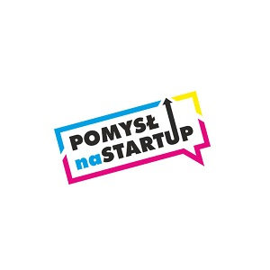

Koszt ogródka zależy od jego wielkości. Najtańszy wariant to 49 zł miesięcznie za ogródek 1 m kwadratowy. Czy to dużo? Możemy na nim zasadzić przykładowo 4 sadzonki pomidora
Nie trzeba być rolnikiem, aby uprawiać pole i zbierać plony. Ba! Nie trzeba nawet mieć pola ani mieszkać na wsi. Startup zdalnyogrodek.pl zadba o poletka zabieganych mieszczuchów od ziarenka aż po zbiory. A cały proces można obserwować z poziomu aplikacji.
 Jest to usługa pozwalająca mieszkańcom dużych aglomeracji na zdalne założenie i prowadzenie własnego ogródka w którym przez intuicyjną aplikacje zlecają zabiegi naszym pracownikom.
Jest to usługa pozwalająca mieszkańcom dużych aglomeracji na zdalne założenie i prowadzenie własnego ogródka w którym przez intuicyjną aplikacje zlecają zabiegi naszym pracownikom.
Twórcy aplikacji zauważyli, że coraz większa część społeczeństwa chce mieć kontrolę nad spożywaną żywnością. Jednocześnie ludzie mają coraz mniej czasu, by samodzielnie ją wytwarzać.
Zapewne popularność gier mobilnych, w których grasz w rolnictwo, zainspirowała Polaków do stworzenia podobnej koncepcji. Z tą różnicą, że nie tylko bawisz się w ogrodnictwo, ale uprawiasz prawdziwe pomidory lub rzodkiewkę, tyle że na odległość, za pomocą komputera i nie brudzisz sobie rąk.